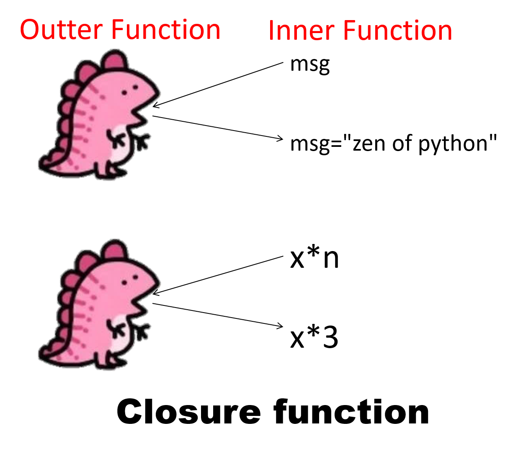
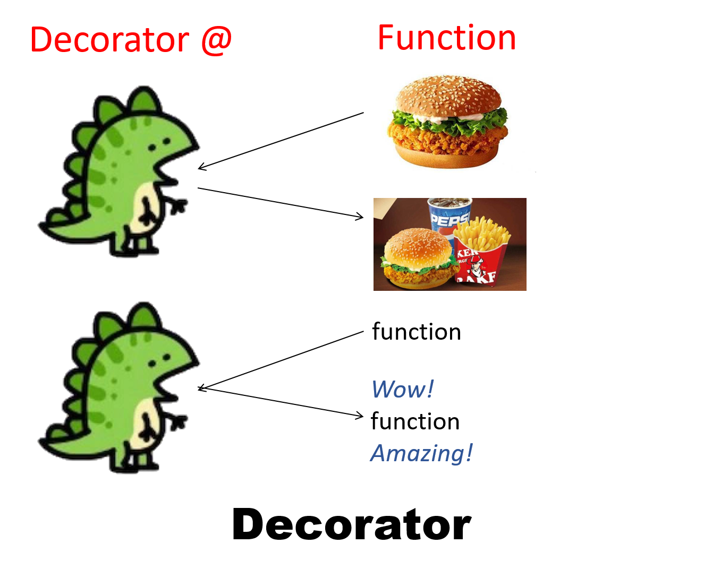

Python Programming
Lecture 9 Closures, Decorators, File
9.1 Nested Functions
Nested Functions (嵌套函数)
def outer():
def inner():
num = 100
print(num)
inner()
outer()
num = 3 # Global（全局）
def outer():
num = 10 # Enclosing（外层）
def inner():
num = 100 # Local（局部）
print(num)
inner()
print(num)
outer()
-
（引用顺序）Local$\rightarrow$Enclosing$\rightarrow$Global$\rightarrow$ Build-in (LEGB principle)
num = 3
def outer():
num = 10
def inner():
print(num)
inner()
outer()
# output？

nonlocal keyword
def outer():
num = 10
def inner():
nonlocal num
num = 100
print(num)
inner()
print(num)
outer()
100
100
def outer():
num = 10
def inner():
global num
num = 100
print(num)
inner()
print(num)
outer()
100
10
def outer():
global num
num = 10
def inner():
global num
num = 100
print(num)
inner()
print(num)
outer()
100
100
def outer():
global num
num = 10
def inner():
num = 100
print(num)
inner()
print(num)
outer()
100
10
num = 3
def outer():
global num
num = 10
def inner():
num = 100
print(num)
inner()
print(num)
outer()
print(num)
100
10
10
num = 3
def outer():
num = 10
def inner():
global num
num = 100
print(num)
inner()
print(num)
outer()
print(num)
100
10
100
num = 3
def outer():
num = 10
def inner():
nonlocal num
num = 100
print(num)
inner()
print(num)
outer()
print(num)
100
100
3
num = 3
def outer():
global num
num = 10
def inner():
global num
num = 100
print(num)
inner()
print(num)
outer()
print(num)
100
100
100
9.2 Closures & Decorators
Closure Function (闭包函数)
def print_msg(msg):
def printer():
print(msg)
return printer
another = print_msg("zen of python")
print(another())
-
We must have a nested function (function inside a function).
-
The nested function must refer to a value defined in the enclosing function.
-
The enclosing function must return the nested function.
-
When to use closures? Closures can avoid the use of global values and provides some form of data hiding. It can also provide an object oriented solution to the problem.
def make_multiplier_of(n):
def multiplier(x):
return x * n
return multiplier
times3 = make_multiplier_of(3)
times5 = make_multiplier_of(5)
print(times3(9))
print(times5(3))
print(times5(times3(2)))
Example: Delivery Platform Order System 1.0 (外卖平台订单系统)
Each city should keep its own order data. Orders in one city should not affect another city.
def create_city_order_system(city):
user_data = {}
def process_order(user, price):
nonlocal user_data
if user not in user_data:
user_data[user] = {"count": 0, "total": 0}
user_data[user]["count"] += 1
user_data[user]["total"] += price
print(f"[{city}站] {user} 本次消费 {price} 元")
print(f"[{city}站] 累计订单：{user_data[user]['count']}")
print(f"[{city}站] 累计消费：{user_data[user]['total']} 元\n")
return process_order
- Why should the variable user_data be in the enclosing?
- If it is inside the inner function, it will reset every time. (每次运行内层函数，数据清零)
- If it is global, all systems will share the same data. (上海站，北京站等等，数据相同)
- A closure works because the data lives in the enclosing function, not inside the function that runs every time.
Decorator (装饰器)
-
Decorators are "wrappers", which means that they let you execute code before and after the function they decorate without modifying the function itself.
def new_decorator(a_function_to_decorate):
def the_wrapper():
print("Before the function runs")
a_function_to_decorate()
print("After the function runs")
return the_wrapper
def a_function():
print("I am a stand alone function.")
a_function_decorated = new_decorator(a_function)
a_function_decorated()
Before the function runs
I am a stand alone function.
After the function runs
@new_decorator
def another_stand_alone_function():
print("Leave me alone")
another_stand_alone_function()
Before the function runs
Leave me alone
After the function runs
def bread(func):
def wrapper():
print("")
func()
print("<\______/>")
return wrapper
def ingredients(func):
def wrapper():
print("#tomatoes#")
func()
print("~salad~")
return wrapper
def sandwich(food="--ham--"):
print(food)
sandwich()
--ham--
@bread
@ingredients # The order matters here.
def sandwich(food="--ham--"):
print(food)
sandwich()
#tomatoes#
--ham--
~salad~
<\______/>
-
Taking decorators to the next level
-
Passing arguments to the decorated function
def passing_arguments(function_to_decorate):
def wrapper(arg1, arg2):
print(f"I got args! Look: {arg1}, {arg2}")
function_to_decorate(arg1, arg2)
return wrapper
@passing_arguments
def print_name(first_name, last_name):
print(f"My name is {first_name}, {last_name}")
print_name("Peter", "Venkman")
I got args! Look: Peter, Venkman
My name is Peter, Venkman
-
If you're making general-purpose decorator--one you'll apply to any function or method, no matter its arguments--then just use *args, **kwargs:
def passing_arbitrary_arguments(function_to_decorate):
def wrapper(*args, **kwargs):
print("Do I have args?:")
print(args)
print(kwargs)
function_to_decorate(*args, **kwargs)
return wrapper
@passing_arbitrary_arguments
def function_with_no_argument():
print("Python is cool, no argument here.")
function_with_no_argument()
Do I have args?:
()
{}
Python is cool, no argument here.
@passing_arbitrary_arguments
def function_with_arguments(a, b, c, d):
print(a, b, c, d)
function_with_arguments(1,2,3,4)
Do I have args?:
(1, 2, 3, 4)
{}
1 2 3 4
function_with_arguments(1,2,3,d = "banana")
Do I have args?:
(1, 2, 3)
{'d': 'banana'}
1 2 3 banana
Delivery Platform Order System 2.0
Every time an order is processed, the system should automatically print a log message.
def log_order(func):
def wrapper(user, price):
print(f"[日志] 收到订单：用户={user}, 金额={price}")
func(user, price)
return wrapper
def create_city_order_system(city):
user_data = {}
@log_order
def process_order(user, price):
nonlocal user_data
if user not in user_data:
user_data[user] = {"count": 0, "total": 0}
user_data[user]["count"] += 1
user_data[user]["total"] += price
print(f"[{city}站] {user} 本次消费 {price} 元")
print(f"[{city}站] 累计订单：{user_data[user]['count']}")
print(f"[{city}站] 累计消费：{user_data[user]['total']} 元\n")
return process_order
Exercise: 修改下面的代码，创建健身打卡系统
- 用闭包写 create_tracker(name)，记录不同的人的累计运动时间。提示：上面的代码可用于内层函数，create_tracker(name) 是外层函数。
- 加装饰器 @warm_up，每次运动前自动输出：
def exercise(minutes):
print(f"运动了 {minutes} 分钟")
先热身 3 分钟！


9.3 File
Reading from a File
-
pi_digits.txt
3.1415926535
8979323846
2643383279
from pathlib import Path
path = Path('pi_digits.txt')
contents = path.read_text()
contents = contents.rstrip()
print(contents)
3.1415926535
8979323846
2643383279
File Path
-
relative path（相对路径）
path = Path('text_files/filename.txt')
-
absolute path（绝对路径）
path = Path('/home/eric/data_files/text_files/filename.txt')
path = Path('c:/text_files/filename.txt') # recommended
path = Path(r'c:\text_files\filename.txt')
path = Path('c:\\text_files\\filename.txt')
path = Path('c:\text_files\filename.txt') # error
- 获取绝对路径的快捷键
- mac的快捷键为: command+option+c
- windows按住shift键, 右键, 会出现 复制为路径的选项
-
Making a List of Lines from a File
from pathlib import Path
path = Path('pi_digits.txt')
contents = path.read_text()
lines = contents.splitlines()
print(lines)
['3.1415926535', '8979323846', '2643383279']
Writing to a File
from pathlib import Path
path = Path('programming.txt')
path.write_text("I love programming.")
-
Python can only write strings to a text file. If you want to store numerical data in a text file, you'll have to convert the data to string format first using the str() function.
from pathlib import Path
contents = "I love programming.\n"
contents += "I love creating new games.\n"
contents += "I also love working with data.\n"
path = Path('programming.txt')
path.write_text(contents)
I love programming.
I love creating new games.
I also love working with data.
Handling the FileNotFoundError Exception
from pathlib import Path
path = Path('alice.txt') # File does not exist
contents = path.read_text(encoding='utf-8')
FileNotFoundError: [Errno 2] No such file or directory: 'alice.txt'
from pathlib import Path
path = Path('alice.txt')
try:
contents = path.read_text(encoding='utf-8')
except FileNotFoundError:
print(f"Sorry, the file {path} does not exist.")
else:
words = contents.split()
num_words = len(words)
print(f"The file {path} has about {num_words} words.")
Sorry, the file alice.txt does not exist.
Reading Multiple Text Files
import os
from pathlib import Path
folder_path = r"C:\Users\Lu\Downloads\marvel"
summary = {}
for filename in os.listdir(folder_path): #列出所有文件
# 组成绝对路径
path = Path(os.path.join(folder_path, filename))
contents = path.read_text(errors="ignore")
summary[filename] = len(contents.splitlines()) # 有多少句台词
JSON
- JSON (JavaScript Object Notation, pronounced /ˈdʒeɪsən/; also /ˈdʒeɪˌsɒn/) is a lightweight, language-independent data format that uses human-readable text to represent data as key–value pairs and arrays. It is widely used for storing and exchanging data, especially between web applications and servers. JSON is based on JavaScript but supported by many programming languages, and files typically use the .json extension.
from pathlib import Path
import json
numbers = [2, 3, 5, 7, 11, 13]
path = Path('numbers.json')
contents = json.dumps(numbers)
path.write_text(contents)
from pathlib import Path
import json
path = Path('numbers.json')
contents = path.read_text()
numbers = json.loads(contents)
print(numbers)
# output: [2, 3, 5, 7, 11, 13]
Example: Reading Multiple Lines in JSON file
from pathlib import Path
import json
path = Path('yelp_sample.json')
contents = path.read_text()
lines = contents.splitlines()
yelp = []
for line in lines:
yelp.append(json.loads(line))
print(len(yelp))
print(yelp[100])
Exercise: 读取多个JSON文件
- 现在有3个JSON文件，分别统计了中国，印度和美国1960-2024年的人口数量，
- 先解压缩文件包，然后读取这3个文件，人口数据压缩包下载
- 计算这三个国家，从1960到2024年各自增加了多少人口
- 提示：你可以参考刚刚学过的代码
import os
from pathlib import Path
folder_path = r"C:\Users\Lu\Downloads\marvel"
summary = {}
for filename in os.listdir(folder_path):
path = Path(os.path.join(folder_path, filename))
contents = path.read_text(errors="ignore")
summary[filename] = len(contents.splitlines())
from pathlib import Path
import json
numbers = [2, 3, 5, 7, 11, 13]
path = Path('numbers.json')
contents = json.dumps(numbers)
path.write_text(contents)
from pathlib import Path
import json
path = Path('numbers.json')
contents = path.read_text()
numbers = json.loads(contents)
print(numbers)
Summary
- File
- Reading: Python Crash Course, Chapter 10